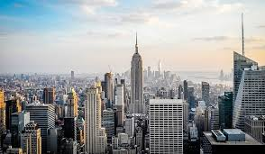

Nueva York es una ciudad de contrastes. Desde los rascacielos imponentes hasta los pequeños cafés en las calles laterales, cada esquina tiene su propia historia que contar. Los taxis amarillos zumban por las avenidas mientras los artistas callejeros llenan el aire con música y color.Nueva York incluye 5 distritos que se ubican donde el río Hudson desemboca en el océano Atlántico. En su centro se encuentra Manhattan, un distrito densamente poblado que se encuentra entre los principales centros comerciales, financieros y culturales del mundo. Sus sitios icónicos incluyen rascacielos, como el Empire State Building, y el amplio Central Park. El teatro Broadway se ubica en la zona del Times Square iluminada con neones.Nueva York incluye 5 distritos que se ubican donde el río Hudson desemboca en el océano Atlántico. En su centro se encuentra Manhattan, un distrito densamente poblado que se encuentra entre los principales centros comerciales, financieros y culturales del mundo. Sus sitios icónicos incluyen rascacielos, como el Empire State Building, y el amplio Central Park. El teatro Broadway se ubica en la zona del Times Square iluminada con neones.
 Volver a la página principal